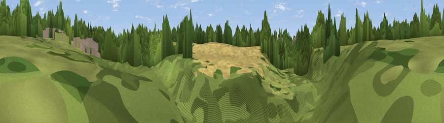

Viewpoint near Euxton
#46022 in England · top 99% of its area beats it · near Euxton · footpathWhere it is
The exact computed spot (SD 54709 17975). Click the marker for map links.
Public access: a public right of way passes within 10 m of this spot. Computed from Natural England's CRoW access layer and OpenStreetMap rights of way — not the legal definitive map. Always verify locally.
The view, rendered

A 360° render of this exact spot computed from the terrain model, tree cover and land cover — summer colours, afternoon light, calibrated against photographs of famous viewpoints. Real trees, hedges and buildings will differ in detail.
The panorama
Grey silhouette: terrain skyline in each direction (720 bearings, Earth curvature and refraction included). Dashed green: skyline with trees (+15 m) and buildings (+8 m) as obstacles. Blue strip: how far the ground is visible on each bearing.
Where the view opens
Wedge length = distance to the farthest visible ground on that bearing (vegetation-aware). Rings at 10, 25 and 50 km.
What fills the view
45% grassland · 42% woodland · 9% cropland · 5% built-up
Angular shares of the visible panorama (visual magnitude), not map area. Landscape diversity 0.47 (0–1 Shannon).
Key numbers
More beautiful places nearby
The staircase of upgrades: each row has a higher view potential than everything closer. Driving times are estimates from straight-line distance, calibrated against real road routing — check an actual route before setting out.
| Place | Direction | Drive | Score |
|---|---|---|---|
| Viewpoint near Wheelton | ENE · 5 km | ~11 min | 25.3 |
| Viewpoint near Whittle le Woods | NE · 6 km | ~12 min | 64.3 |
| Viewpoint near Andertons Mill | SW · 6 km | ~13 min | 68.4 |
| Viewpoint near Chorley | E · 6 km | ~13 min | 71.3 |
| Grain Pole Hill | E · 8 km | ~16 min | 73.6 |
| Great Lawn | ESE · 10 km | ~19 min | 77.1 |
| Rivington Pike | ESE · 10 km | ~20 min | 81.9 |
| White Brow | ESE · 13 km | ~23 min | 82.9 |
53.65630, -2.68677 · source: osm viewpoint · position refined by local search. Computed location — check access rights before visiting.